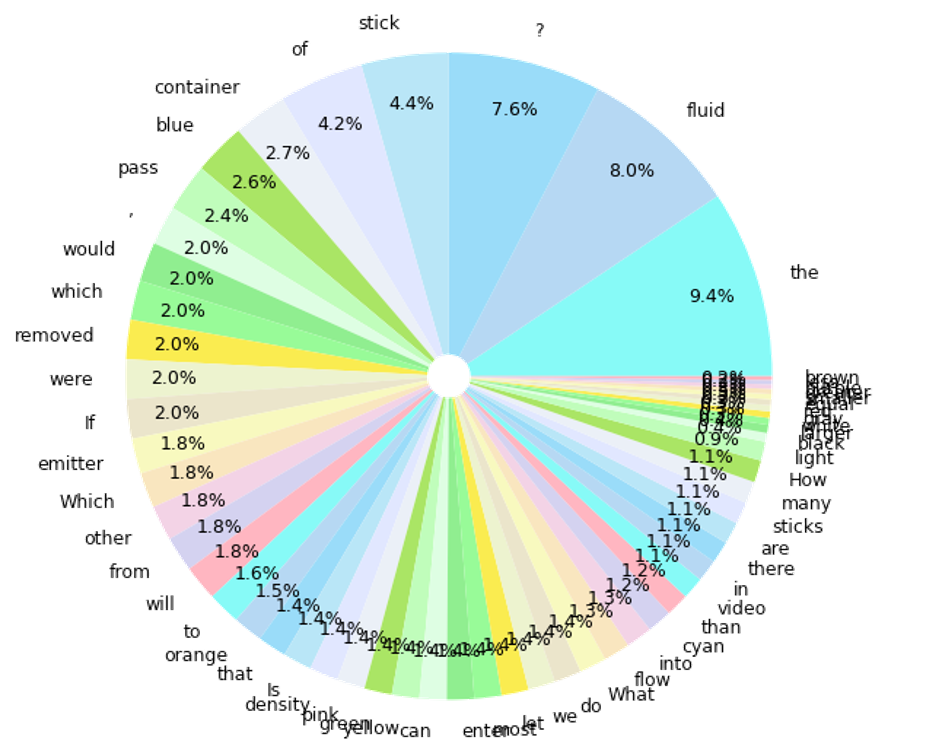
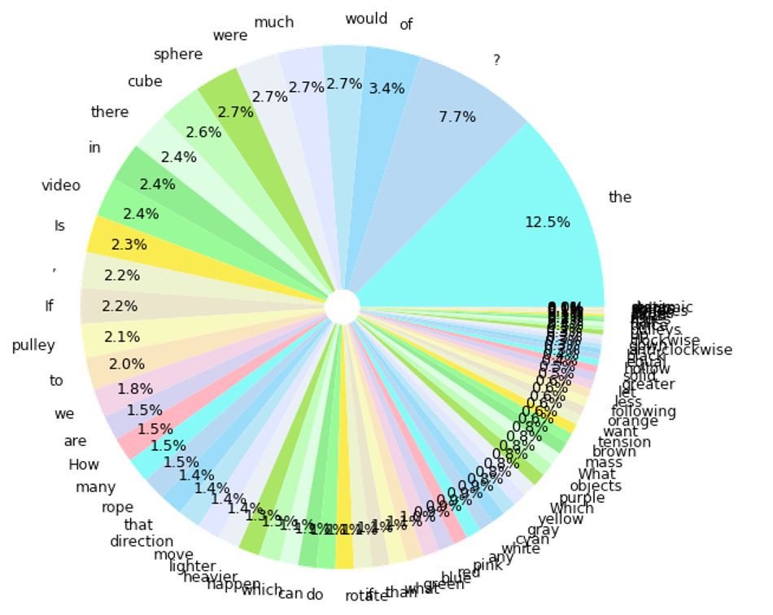

Question Statistics
Figures are listed following the table.
| Question Generation Method | Template-Based | LLM-Paraphrased | Template-Based | LLM-Paraphrased | Template-Based | LLM-Paraphrased | Template-Based | LLM-Paraphrased |
|---|---|---|---|---|---|---|---|---|
| Scenario | Fluid | Fluid | Rope | Rope | Cloth | Cloth | Ball | Ball |
| Lexical Diversity: TTR | 0.0096 | 0.052 | 0.0096 | 0.053 | 0.0089 | 0.068 | 0.0066 | 0.049 |
| Lexical Diversity: Word Distribution | See Figure | See Figure | See Figure | See Figure | See Figure | See Figure | See Figure | See Figure |
| QA Diversity: Question Types | 7 Types, See figure | 7 Types, See figure | 8 Types, See figure | 8 Types, See figure | 6 Types, See figure | 6 Types, See figure | 5 Types, See figure | 5 Types, See figure |
| Syntactic Diversity: Sentence Length Average / Variance | 13.1/3.9 | 13.6/10.7 | 13.0/6.9 | 13.0/11.3 | 12.2/8.5 | 11.7/11.4 | 15.2/10.2 | 15.6/19.2 |
| Readability Scores: Flesch-Kincaid Grade Level | 4.4 | 4.5 | 3.1 | 3.1 | 4.1 | 3.9 | 4.0 | 4.1 |
Question Type Distribution
Question distribution statistics of fluid, rope, cloth and ball scenarios.
Word Distribution of Templated and Paraphrased Questions
Fluid Templated QA
TTR=57/5896
Rope Templated QA
TTR=75/7804
Cloth Templated QA
TTR=49/5488

Ball Templated QA
TTR=45/6858

Fluid LLM-Paraphrased QA
TTR=320/6117
Rope LLM-Paraphrased QA
TTR=414/7810
Cloth LLM-Paraphrased QA
TTR=359/5294
Ball LLM-Paraphrased QA
TTR=342/7027
Experiments of Various Prompting Methods on MLLM
On this table, experimental outcomes of different prompting methods are listed. During rebuttal, we experimented different prompting methods on MLLMs that may affect their performance, such as different ways of questioning, instructing, describing, and sampling the physical events in the video.
Table Description | We compute the average scores in each scenario, as shown at row 1 to row 4. We mark the row-wise highest value in blue, the second highest value in red, as well as some other highest values in bold. The following rows (5-26) store all experimental data for detailed investigation.
Data Analysis | We observe that the Gemini-Pro-Vision(Gemini)'s performance varies with scenarios. For rope scenario, as we pack the prompt with more helpful scenario-specific instructions, the scores significantly improve, for example, prompting with designed scenario-specific guideline, in-context QA examples, or human explained examples. Accurately describing the events in the current video with full texts, assembling NEWTON's approach, also raises performance scores. However, as for the fluid, cloth, and ball scenarios, these methods act as a somehow converse role, which is seemingly weird phenomenon.
| Model: Gemini-Pro-Vision | Human Performance | Random Choice | Average of Columns on the Right | a) Question Only | b) Question Only (Text Only) | c) Scenario-Specific Guideline | d) In-Context QA Examples | e) Human Explained Examples | f) Upsampled Video (11→16 Frames, Higher Resolution) | g) LLM-Paraphrased Questions | h) LLM-Paraphrased Questions (Text Only) | i) NEWTON Approach (Text Only) |
|---|---|---|---|---|---|---|---|---|---|---|---|---|
| Average Rope | 85.2 | 31.1 | 31.1 | 31.5 | 28.6 | 34.1 | 33.5 | 36.2 | 29.9 | 27.9 | 26.1 | 32.3 |
| Average Fluid | 67.9 | 31.2 | 26.1 | 25.2 | 31.0 | 25.1 | 26.4 | 23.1 | 23.6 | 23.4 | 32.9 | 23.9 |
| Average Cloth | 79.4 | 48.3 | 47.5 | 45.0 | 53.4 | 46.4 | 45.6 | 48.8 | 44.4 | 43.5 | 51.6 | 48.9 |
| Average Ball | 81.0 | 42.9 | 41.6 | 43.0 | 44.3 | 43.8 | 35.4 | 32.1 | 43.5 | 43.4 | 46.2 | 43.2 |
| Rope P | 84.7 | 30.0 | 35.9 | 35.5 | 34.0 | 33.5 | 34.5 | 39.0 | 34.0 | 30.5 | 32.0 | 50.0 |
| Rope CO | 90.2 | 51.3 | 47.3 | 48.2 | 44.4 | 46.6 | 51.2 | 53.4 | 46.6 | 43.8 | 44.0 | 47.8 |
| Rope CQ | 75.0 | 14.7 | 9.6 | 12.0 | 5.6 | 14.8 | 13.4 | 12.0 | 11.3 | 9.2 | 5.6 | 2.1 |
| Rope GO | 91.9 | 55.2 | 52.1 | 51.6 | 48.9 | 54.7 | 56.1 | 57.4 | 48.9 | 49.3 | 47.1 | 54.7 |
| Rope GQ | 84.0 | 4.5 | 10.7 | 10.3 | 10.3 | 20.7 | 12.1 | 19.0 | 8.6 | 6.9 | 1.7 | 6.9 |
| Fluid P | 75.8 | 33.3 | 17.9 | 10.0 | 28.0 | 22.0 | 24.0 | 21.0 | 19.0 | 11.0 | 22.0 | 4.0 |
| Fluid CO | 82.5 | 52.9 | 48.7 | 47.3 | 48.0 | 45.7 | 48.3 | 46.0 | 46.3 | 45.0 | 55.3 | 56.0 |
| Fluid CQ | 60.6 | 6.0 | 4.7 | 5.1 | 6.4 | 2.6 | 5.1 | 2.6 | 0.0 | 2.6 | 15.4 | 2.6 |
| Fluid GO | 75.0 | 59.9 | 46.0 | 44.4 | 63.3 | 40.8 | 42.6 | 36.7 | 40.8 | 43.2 | 60.4 | 42.0 |
| Fluid GQ | 64.3 | 7.5 | 7.6 | 11.3 | 11.3 | 5.7 | 7.5 | 3.8 | 5.7 | 5.7 | 11.3 | 5.7 |
| Fluid PO | 73.9 | 53.8 | 52.2 | 52.4 | 51.2 | 53.1 | 51.6 | 48.8 | 49.2 | 52.0 | 54.3 | 57.1 |
| Fluid PQ | 42.9 | 4.8 | 5.5 | 5.8 | 8.7 | 5.8 | 5.8 | 2.9 | 4.3 | 4.3 | 11.6 | 0.0 |
| Clotd P | 81.4 | 46.7 | 49.0 | 42.0 | 54.0 | 46.0 | 54.0 | 54.0 | 47.0 | 39.0 | 48.0 | 57.0 |
| Clotd PO | 79.6 | 52.2 | 50.6 | 50.1 | 56.1 | 50.1 | 45.9 | 50.3 | 47.7 | 50.1 | 55.7 | 49.2 |
| Clotd PQ | 77.3 | 46.0 | 42.9 | 43.0 | 50.0 | 43.0 | 37.0 | 42.0 | 38.5 | 41.5 | 51.0 | 40.5 |
| Ball P | 76.9 | 53.5 | 53.4 | 54.0 | 54.0 | 52.0 | 53.0 | 46.0 | 56.0 | 58.0 | 61.0 | 47.0 |
| Ball CO | 93.9 | 53.6 | 55.7 | 60.9 | 60.1 | 56.4 | 47.3 | 43.2 | 60.5 | 57.2 | 57.6 | 58.4 |
| Ball CQ | 90.9 | 30.4 | 27.0 | 29.6 | 37.0 | 28.4 | 13.6 | 7.4 | 34.6 | 27.2 | 28.4 | 37.0 |
| Ball GO | 89.7 | 55.9 | 55.9 | 54.1 | 60.1 | 57.9 | 55.2 | 57.4 | 54.1 | 53.9 | 55.6 | 55.2 |
| Ball GQ | 84.6 | 30.2 | 24.2 | 24.6 | 34.4 | 31.1 | 6.6 | 11.5 | 23.0 | 27.9 | 32.8 | 26.2 |
| Ball PO | 72.5 | 50.6 | 51.0 | 51.7 | 47.1 | 52.9 | 51.1 | 43.7 | 50.6 | 52.3 | 56.9 | 52.9 |
| Ball PQ | 58.8 | 25.9 | 24.1 | 25.9 | 17.2 | 27.6 | 20.7 | 15.5 | 25.9 | 27.6 | 31.0 | 25.9 |
From method a) to i) (check table headers), we draw the average, maximum, and minimum values of various prompting method scores on this radar chart. For reference, human performance on each question type is plotted as well. For normalization of visual effects, values on chart are processed by subtracting the random choice scores.
(For convenience of reference) This is the comparison between baselines and human on ContPhy evaluation. We list a small number of selected values among the results from various question families, Property, Counterfactual, Goal-driven and Predictive questions. Accuracies are reported with per option and per question.